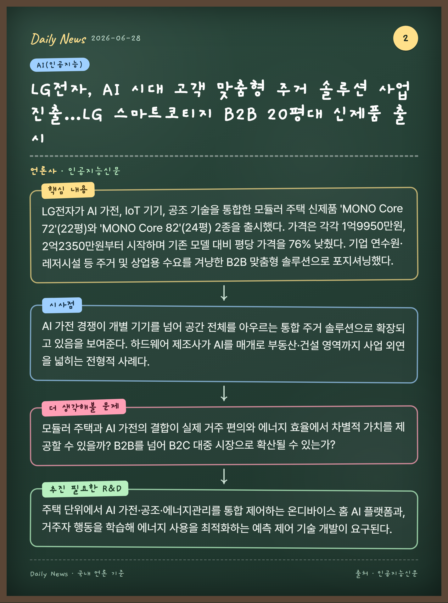
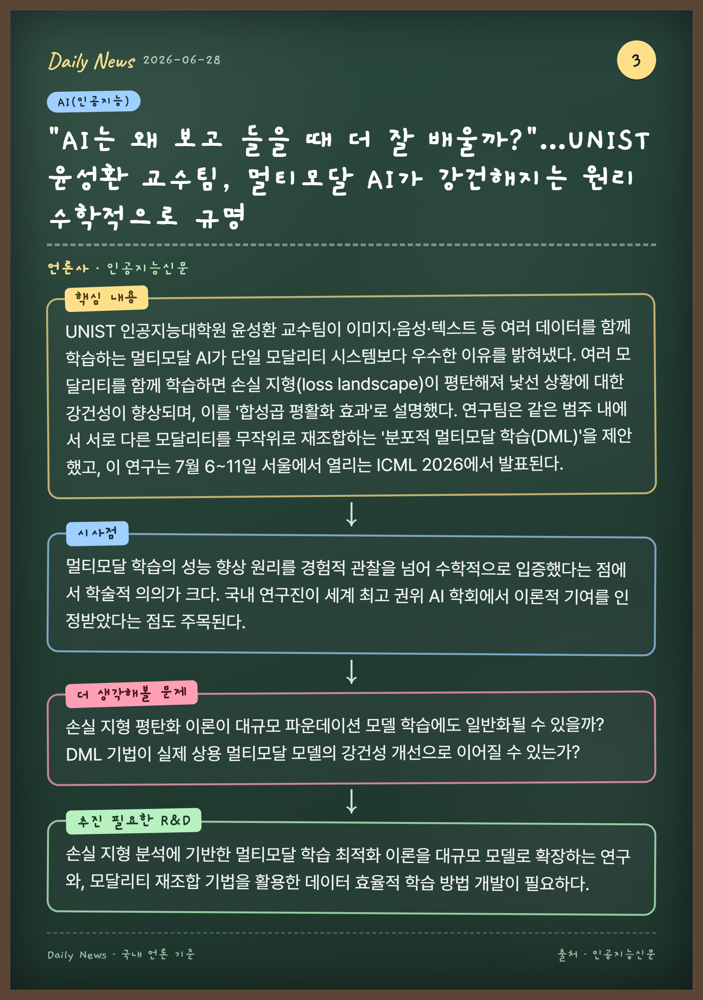

2023년 2월 7개사로 출범한 K-AI 얼라이언스가 50개 멤버사로 확대됐으며, 미국 멘로파크에서 열린 'Unite 2026' 행사에서 이를 발표했다. AI 반도체·인프라·모델·응용을 아우르며 멤버사의 35% 이상이 미국·싱가포르·일본 등 해외에 본사를 두고 있다. SK텔레콤 직접 관리에서 SK그룹 AI위원회 관리 체제로 전환하고, 단순 네트워킹을 넘어 공동 기술개발·실증·글로벌 고객 확보에 집중하는 'K-AI 얼라이언스 2.0'을 공개했다.
시사점
단일 기업이 독자적으로 AI 경쟁력을 확보하기 어려운 시대에 풀스택 생태계를 유기적으로 연결하려는 전략적 행보다. 국내 기업이 주도하되 글로벌 멤버사를 다수 포함시켜 한국 AI 산업의 국제적 외연을 넓히려는 시도로 평가된다.
더 생각해볼 문제
느슨한 얼라이언스 형태로 실제 공동 기술개발과 사업 성과를 끌어낼 수 있을까? 해외 본사 멤버사 비중이 높은 구조가 국내 산업 생태계 강화에 실질적으로 기여하는가?
추진 필요한 연구개발 주제
AI 반도체-인프라-모델-응용을 잇는 풀스택 상호운용성 표준과 공동 실증 플랫폼 개발, 멤버사 간 데이터·모델 공유를 위한 보안·거버넌스 체계 연구가 필요하다.
LG전자, AI 시대 고객 맞춤형 주거 솔루션 사업 진출…LG 스마트코티지 B2B 20평대 신제품 출시

📰 인공지능신문
핵심 내용
LG전자가 AI 가전, IoT 기기, 공조 기술을 통합한 모듈러 주택 신제품 'MONO Core 72'(22평)와 'MONO Core 82'(24평) 2종을 출시했다. 가격은 각각 1억9950만원, 2억2350만원부터 시작하며 기존 모델 대비 평당 가격을 76% 낮췄다. 기업 연수원·레저시설 등 주거 및 상업용 수요를 겨냥한 B2B 맞춤형 솔루션으로 포지셔닝했다.
시사점
AI 가전 경쟁이 개별 기기를 넘어 공간 전체를 아우르는 통합 주거 솔루션으로 확장되고 있음을 보여준다. 하드웨어 제조사가 AI를 매개로 부동산·건설 영역까지 사업 외연을 넓히는 전형적 사례다.
더 생각해볼 문제
모듈러 주택과 AI 가전의 결합이 실제 거주 편의와 에너지 효율에서 차별적 가치를 제공할 수 있을까? B2B를 넘어 B2C 대중 시장으로 확산될 수 있는가?
추진 필요한 연구개발 주제
주택 단위에서 AI 가전·공조·에너지관리를 통합 제어하는 온디바이스 홈 AI 플랫폼과, 거주자 행동을 학습해 에너지 사용을 최적화하는 예측 제어 기술 개발이 요구된다.
"AI는 왜 보고 들을 때 더 잘 배울까?"…UNIST 윤성환 교수팀, 멀티모달 AI가 강건해지는 원리 수학적으로 규명

📰 인공지능신문
핵심 내용
UNIST 인공지능대학원 윤성환 교수팀이 이미지·음성·텍스트 등 여러 데이터를 함께 학습하는 멀티모달 AI가 단일 모달리티 시스템보다 우수한 이유를 밝혀냈다. 여러 모달리티를 함께 학습하면 손실 지형(loss landscape)이 평탄해져 낯선 상황에 대한 강건성이 향상되며, 이를 '합성곱 평활화 효과'로 설명했다. 연구팀은 같은 범주 내에서 서로 다른 모달리티를 무작위로 재조합하는 '분포적 멀티모달 학습(DML)'을 제안했고, 이 연구는 7월 6~11일 서울에서 열리는 ICML 2026에서 발표된다.
시사점
멀티모달 학습의 성능 향상 원리를 경험적 관찰을 넘어 수학적으로 입증했다는 점에서 학술적 의의가 크다. 국내 연구진이 세계 최고 권위 AI 학회에서 이론적 기여를 인정받았다는 점도 주목된다.
더 생각해볼 문제
손실 지형 평탄화 이론이 대규모 파운데이션 모델 학습에도 일반화될 수 있을까? DML 기법이 실제 상용 멀티모달 모델의 강건성 개선으로 이어질 수 있는가?
추진 필요한 연구개발 주제
손실 지형 분석에 기반한 멀티모달 학습 최적화 이론을 대규모 모델로 확장하는 연구와, 모달리티 재조합 기법을 활용한 데이터 효율적 학습 방법 개발이 필요하다.
KAIST 과학기술정책대학원 최문정 교수 연구팀이 OpenAI GPT-4o에 내재된 연령 관련 편견을 분석했다. 10~90세 연령대를 묘사하는 중립적 프롬프트로 생성한 900개 텍스트를 사회심리학 이론으로 검토한 결과, 60세 이상 고령층은 '따뜻함' 점수는 높지만 '역량' 점수는 젊은 층보다 낮게 나타났다. 자기주장성 표현 빈도가 연령 상승에 따라 감소했고 70대 이상에 대해서는 획일적 묘사가 반복됐으며, 연구팀은 이런 표현의 반복 노출이 고령자 편견을 강화해 디지털 연령차별로 이어질 수 있다고 경고했다.
시사점
생성 AI가 겉으로는 중립적으로 보이지만 사회적 약자에 대한 미묘한 편향을 학습·재생산할 수 있음을 정량적으로 보여준다. AI 기본법 시행 등 AI 신뢰성·공정성이 강조되는 흐름에서 편향 측정·완화의 중요성을 환기한다.
더 생각해볼 문제
연령 편향을 학습 데이터·정렬 과정에서 효과적으로 완화하면서도 모델 성능을 유지할 수 있을까? 고령자 등 다양한 세대가 AI 개발에 참여하는 구조를 어떻게 제도화할 것인가?
추진 필요한 연구개발 주제
생성 AI의 연령·세대 편향을 측정하는 표준화된 평가 벤치마크 개발과, 학습·정렬 단계에서 사회집단 편향을 완화하는 디바이어싱 기법 연구가 필요하다.
딥시크가 추측형 디코딩(speculative decoding) 기술을 적용한 'D스파크'를 공개했다. 경량 모델이 여러 토큰을 먼저 생성하고 대형 모델이 검증하는 방식으로, 기존 모델과 동일한 출력 품질을 유지하면서 응답 속도를 높인다. 실제 서비스 환경에서 딥시크-V4-플래시 모델에 적용 시 생성 속도가 60~85%, 프로 모델은 57~78% 향상됐으며, 깃허브에 오픈소스 코드와 허깅페이스 체크포인트를 함께 공개했다.
시사점
AI 추론 비용·지연이 상용화의 핵심 병목인 상황에서 품질 손실 없이 속도를 크게 끌어올리는 기술을 오픈소스로 공개해 업계 전반의 추론 효율화를 가속할 수 있다. 중국 AI 기업의 오픈소스 전략이 글로벌 LLM 인프라 경쟁에 미치는 영향도 주목된다.
더 생각해볼 문제
추측형 디코딩이 다양한 모델·도메인에서 일관된 가속 효과를 낼 수 있을까? 오픈소스 공개가 국내 AI 서비스의 추론 비용 절감에 어떻게 활용될 수 있는가?
추진 필요한 연구개발 주제
추측형 디코딩의 검증 모델 경량화와 도메인 적응 기법 연구, 국내 LLM에 적용 가능한 한국어 특화 가속 디코딩 기술 개발이 필요하다.
마이크로소프트가 자체 개발한 AI 코딩 모델 'MAI-코드-1-플래시'를 깃허브 코파일럿 비즈니스·엔터프라이즈 고객에게 정식 출시했다. 빠른 응답 속도와 낮은 지연시간을 특징으로 반복적 코드 생성·수정 작업에 최적화됐으며, 벤치마크에서 클로드 하이쿠 4.5의 35.2%를 웃도는 51.2%를 기록하고 동일 작업을 최대 60% 적은 토큰으로 수행한다. 요금은 입력 토큰 100만개당 0.75달러, 출력 토큰 100만개당 4.50달러다.
시사점
그동안 앤트로픽·오픈AI 모델에 의존하던 마이크로소프트가 자체 모델로 코딩 영역에서 외부 의존도를 낮추려는 전략을 본격화했다. 코딩 AI 시장에서 성능보다 속도·비용 효율을 앞세운 경량 모델 경쟁이 격화되고 있음을 보여준다.
더 생각해볼 문제
자체 모델 도입으로 마이크로소프트가 앤트로픽 등에 대한 의존도를 실제로 얼마나 낮출 수 있을까? 경량 코딩 모델이 복잡한 장기 개발 작업에서도 경쟁력을 유지할 수 있는가?
추진 필요한 연구개발 주제
토큰 효율이 높은 코딩 특화 경량 모델 아키텍처 연구와, 반복 작업과 복잡 작업을 자동 분기하는 모델 라우팅·오케스트레이션 기술 개발이 필요하다.
애플이 메모리 반도체 가격 압박으로 미국 정부 블랙리스트에 등재된 중국 기업 CXMT로부터 칩을 구매할 수 있도록 트럼프 행정부 승인을 받기 위한 로비를 추진 중이다. AI 데이터센터 구축으로 HBM 수요가 급증하면서 일반 메모리 공급 부족과 가격 폭등이 발생했고, 애플은 맥북·아이패드 가격을 20% 인상한 직후 시가총액이 2630억달러 감소했다. 미 의회와 안보 전문가들은 강하게 반발하고 있으며, 2022년에는 애플이 중국 YMTC 칩 탑재 계획을 철회한 전례가 있다.
시사점
AI 인프라 확대가 일반 메모리 시장의 공급 부족과 가격 폭등을 유발하며 글로벌 IT 제품 가격까지 끌어올리는 연쇄 효과를 보여준다. HBM 호황의 그늘에서 메모리 수급 불균형이 지정학·공급망 리스크로 번지고 있다.
더 생각해볼 문제
AI 메모리 슈퍼사이클이 일반 D램·낸드 공급 부족을 얼마나 장기화할 것인가? 한국 메모리 기업은 이 수급 불균형 국면에서 어떤 기회와 리스크를 안는가?
추진 필요한 연구개발 주제
HBM과 범용 메모리 간 생산능력 배분을 최적화하는 수요 예측·생산 계획 기술과, AI 워크로드의 메모리 효율을 높이는 압축·계층화 기술 연구가 필요하다.
에포크 AI와 METR이 공동 개발한 '미러코드(MirrorCode)' 벤치마크를 공개했다. AI 모델의 장기 소프트웨어 개발 능력을 평가하는 도구로, 25개 프로그램을 원본 코드 없이 처음부터 재구현하도록 요구하며 인터넷 접근과 코드 암기가 불가능하도록 설계됐다. 클로드 오퍼스 4.7이 1만6000줄 규모의 Go 코드 프로그램을 14시간에 완료하는 등 진전을 보였으나 최고 성능 모델도 56% 성공률에 그쳤고, 평가 프레임워크와 22개 프로그램을 깃허브에 오픈소스로 공개했다.
시사점
단순 코드 스니펫 생성이 아닌 장시간 자율 개발 능력을 측정하는 벤치마크가 등장하며 AI 에이전트의 실제 역량 한계를 객관적으로 드러냈다. '코드 암기'로는 통과할 수 없는 설계는 벤치마크 오염 문제에 대한 대응으로도 의미가 있다.
더 생각해볼 문제
장기 자율 개발에서 모델이 실패하는 주된 원인은 추론 능력 부족인가, 컨텍스트 관리 한계인가? 이런 벤치마크가 실제 소프트웨어 생산성 향상과 어떻게 연결되는가?
추진 필요한 연구개발 주제
장기 코딩 작업을 위한 컨텍스트 관리·계획 수립 능력 강화 연구와, 벤치마크 오염을 방지하는 동적 평가 데이터셋 생성 기술 개발이 필요하다.
데이터브릭스 전 AI 총괄 나빈 라오 CEO가 설립한 언컨벤셔널AI가 AI 모델 'Un-0'를 공개하며 새로운 컴퓨팅 아키텍처로 AI 추론 전력 소비를 최대 1000배까지 줄일 수 있다고 주장했다. 핵심은 진동 기반 물리 시스템인 '오실레이터'로, 기존 GPU 방식 대신 자연스러운 동기화 현상을 계산에 활용한다. 세쿼이아 등 주요 투자사로부터 45억 달러의 기업가치를 인정받았으나 실제 반도체 환경에서의 검증이 남아 있다.
시사점
AI 데이터센터 전력 소비가 사회적 문제로 부상한 가운데, GPU 중심 디지털 연산을 대체하려는 물리 기반 아날로그 컴퓨팅 시도가 막대한 투자를 끌어모으고 있다. 성공 시 AI 인프라의 에너지 패러다임을 바꿀 잠재력이 있으나 상용화 불확실성도 크다.
더 생각해볼 문제
오실레이터 기반 아날로그 컴퓨팅이 실제 반도체로 구현돼 디지털 정확도와 범용성을 확보할 수 있을까? 1000배 절감 주장이 실측으로 입증될 수 있는가?
추진 필요한 연구개발 주제
물리 기반·아날로그 컴퓨팅 소자의 정밀도·확장성 검증 연구와, 기존 디지털 AI 워크로드를 아날로그 가속기로 매핑하는 컴파일러·알고리즘 개발이 필요하다.
미국 정부의 AI 규제·개입 요구에 대해 오픈AI와 앤트로픽이 상반된 전략을 취하고 있다. 오픈AI는 연방정부 요청을 수용해 최신 모델의 단계적 공개에 동의한 반면, 앤트로픽은 최신 모델 '페이블' 출시를 철회했다. 실용주의로 기업 가치를 극대화하는 샘 알트먼 CEO의 접근과 AI 안전성 원칙을 고수하려는 다리오 아모데이 CEO의 철학이 서로 다른 선택으로 드러났다.
시사점
정부의 AI 거버넌스 개입이 본격화되면서 선도 AI 기업들이 규제 대응에서 노선 분화를 보이고 있다. 안전성과 상업적 이익, 정부와의 협력 사이에서 기업이 어떤 균형을 택하느냐가 향후 AI 산업 지형에 영향을 미칠 전망이다.
더 생각해볼 문제
정부 개입 수용과 자율 규제 중 어느 전략이 장기적으로 기업 경쟁력과 사회적 신뢰를 확보할까? 한국의 AI 기업과 정책은 이런 미국발 규제 분화에서 무엇을 참고해야 하는가?
추진 필요한 연구개발 주제
정부·기업 간 AI 안전성 평가·공개 절차를 위한 표준 프로토콜 연구와, 모델 단계적 공개 시 위험을 통제하는 안전성 검증·모니터링 기술 개발이 필요하다.